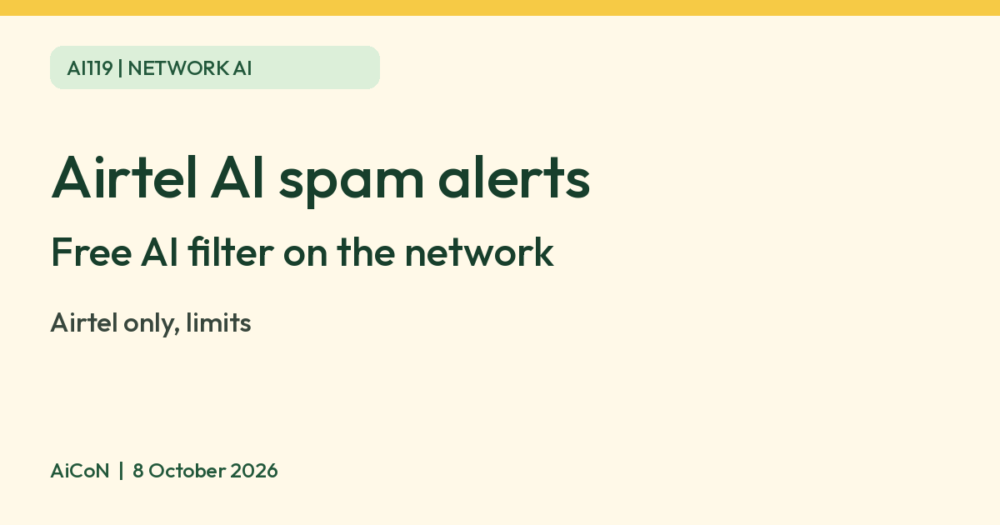

Airtel AI spam alerts: what the free network filter does
Airtel says its AI-based filter flags suspected spam calls and SMS for customers in India and is free and switched on automatically. Airtel lists VoLTE smartphones as a condition. It is an alert, so you still decide whether to answer or block.

What it is
Airtel launched what it calls India's first network-based, AI-powered spam detection solution in September 2024. In its press release, Airtel says the solution alerts customers in real time to suspected spam calls and SMS, is free of cost, and is auto-activated for all Airtel customers without a service request or an app download.
What Airtel says it checks
- Airtel's terms say the AI uses network intelligence to flag suspected spam calls and SMS based on the caller or sender's behaviour pattern.
- The terms list usage pattern, frequency, call duration, suspicious URLs, IMEI and 250+ derived parameters.
- For links, Airtel says it checks suspicious domains by scanning internet traffic and checking global repositories, then blocks the domain at network level and shows a page saying it was found malicious.
Who gets it
| Cost | Free, per Airtel's launch and April 2025 releases. |
|---|---|
| Activation | Automatic for Airtel customers, no request needed. |
| Phone | Airtel's terms say a VoLTE-enabled smartphone on Airtel prepaid or postpaid. |
| Languages | Airtel's April 2025 release says alerts come in ten Indian languages, only for Android devices. |
| Calls covered | Airtel says both domestic and international calls and SMS are screened. |
What you can do
Airtel's terms say you can decide for yourself whether to block a flagged caller or sender, and report or register a complaint on airtel.in.
Limits to know
- It is for Airtel connections only. It does not protect a Jio or Vi number.
- The label is "Suspected Spam". It can be wrong, so do not ignore a real bank or delivery call just because it is flagged, and do not trust a call because it is not flagged.
- Never share an OTP, PIN or card details over a call, whatever the screen says.
- Airtel's call and SMS figures are the company's own claims, and we do not repeat them as fact.
- We did not test the alerts ourselves.
Frequently asked questions
Do I need to install anything?
Airtel says no. It is auto-activated for Airtel customers.
Does it cost money?
Airtel says it is free of cost.
Does it work on every phone?
Airtel's terms specify a VoLTE-enabled smartphone. Vernacular alerts are Android only, per Airtel.
Is it the same as Truecaller?
No. It runs on Airtel's network for Airtel customers. Truecaller is an app that works on any network.
Sources: Airtel launch press release, Airtel April 2025 release, Airtel Spam Identifier terms. Checked 8 October 2026.